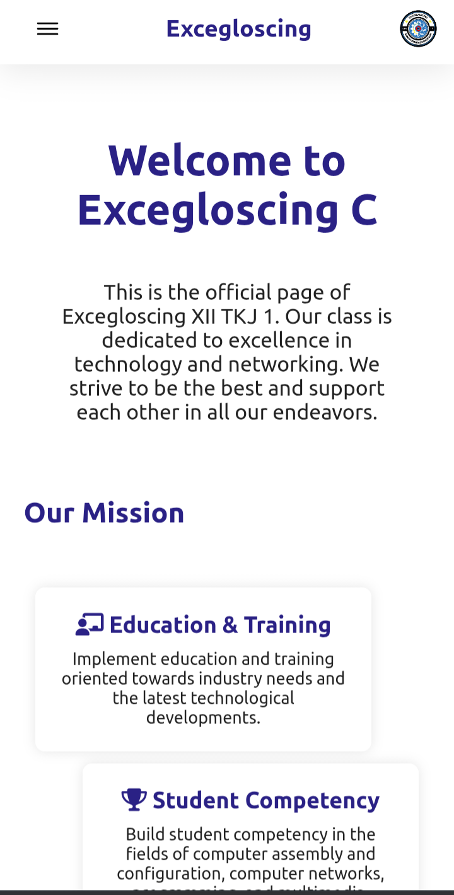

I am a student at SMKN 1 Rengas Dengklok, specializing in Computer Network Engineering and Web Programming. For more information, please click About Me.

Website yang menampilkan daftar anggota kelas serta galeri dokumentasi kegiatan sekolah.
Live Demo GitHub